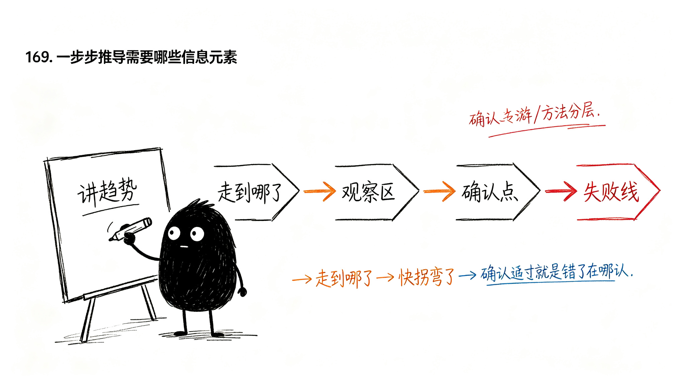

图上要画哪些信息？
想象一下，打开这个工具，就相当于找个人帮忙。
有个人站在这张K线图旁边，跟你讲现在的情况。他怎么讲，才算把这件事讲清楚了？
他肯定得先说：你看，现在这个趋势是怎么样的——是在涨，还是在跌？ 然后再说：现在走到哪了？ 然后再说：到这里了，是不是快拐弯了？ 最后再说：那现在该不该动手？错了在哪认？
这样一条线讲下来，你才算听明白。

那反过来想，要让这张图能这么跟你讲清楚，图上得有哪些东西？我们一步步捋。
第一步：先讲趋势
打开图，第一句肯定是：现在是在涨还是在跌？
但价格不是一根直线涨上去的，它是涨一阵、歇一阵、再涨一阵。你直接看K线，根本看不出哪里是"一阵"。
所以得先找到哪里是高点，哪里是低点——涨完了拐头的那个地方，跌完了拐头的那个地方。
高低点连起来，就是一段一段的波段。 波段连起来，就看出趋势了——高点抬高、低点抬高，就是上涨趋势；反过来就是下跌趋势。
所以图上需要： 分型（找高低点）、笔（连波段）、中枢（看趋势结构）。
第二步：再讲走到哪了
知道了是涨是跌，还不够——现在走到什么位置了？
上升趋势里，最近的重要回调低点，就是防守位。价格回到防守位附近，就是在考验上升趋势还撑不撑得住。
下降趋势反过来，最近的反弹高点，就是压力位。
所以图上需要： 防守位、压力位。
第三步：是不是快拐弯了？
价格走到防守位/压力位附近了，是不是要拐头了？
这时候不能马上动手，得先观察——看看它怎么回应。是撑住了继续涨，还是撑不住要破？
这个"开始观察"的区域，就是观察区。
所以图上需要： 观察区。
第四步：转折确认了吗？
观察了一阵，跌破了防守位——是不是真的要转折了？
不一定。有时候跌破一下又拉回去了，那是假破位。
不能光靠跌破这个动作就下结论，得有右侧走势证明——跌破之后，继续走低，反弹也不过前高，那才是真的转折成立了。
这个"被右侧走势证明"的位置，就是确认点。
所以图上需要： 确认点。
第五步：错了在哪认？
万一判断错了呢？什么时候我知道自己看错了？
得有个明确的位置，跌破了就说明判断错了，认亏走人。不能一直扛着，也不能凭感觉说"好像不对"。
所以图上需要： 失败线。
小结
这样一步步下来，图上需要的东西就齐了：
分型 → 笔 → 中枢 → 防守位/压力位 → 观察区 → 确认点 → 失败线
每一样都是有用的，不是凭空加的。图要跟你讲清楚一件事，就得有这些东西。